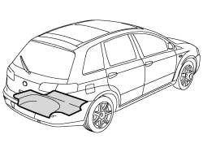
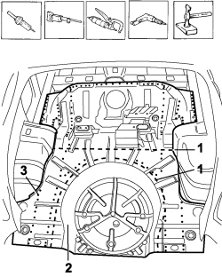
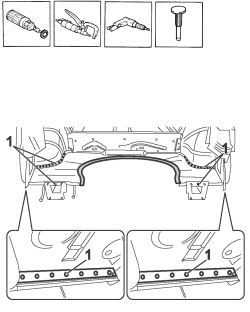
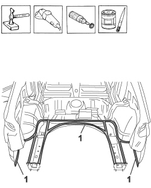
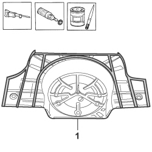
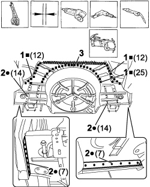
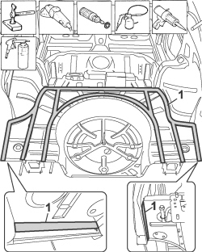

7210B56 R.R. BOOT LOAD COMPARTMENT FLOOR PLAN (PARTIAL REAR INTERVENTION)
- Path
- Procedures > 72 PANELS AND FRAMES > 7210 REMOVING-REFITTING > 7210B STRUCTURAL ELEMENTS (CENTRE AND REAR SECTION) > 7210B56 R.R. BOOT LOAD COMPARTMENT FLOOR PLAN (PARTIAL REAR INTERVENTION)
- Kind
- repair procedure (removal / refitting; the operation number is the code)
- Applies to
- all engines; all production periods
- Interactive page
- https://sloeber94.github.io/elrnDB-fCrm/en/#/194001231
Applies to: all engines; all production periods
 Removing
Removing
 Refitting
RefittingOp. 7210B70 R.R. REAR TRIM (STRUCTURAL ELEMENT)
Op. 7210B82 R.R REAR CROSSMEMBER
Op. 7210B57 RR CROSS MEMBER UNDER REAR SEAT
- Check that the components connected are not distorted by checking the bodyshell alignment measurements using suitable equipment (gauges, templates or jigs).
- Straighten the body as necessary.

Applies to: all engines; all production periods
- Use a hot air blower and a wire brush to remove the underbody protection to be able to gain access the to spot welds.
1. Use a hack sawing machine following the cutting line shown in the diagram.
2. Remove the cut parts from the floor.
3. Use the chamfering machine to remove the spot welds shown in the diagram.
- Use the drill and chamfer the spot welds not accessible with the chamfering machine.
- Use the hammer and chisel and remove the spot welds chamfered previously.

Applies to: all engines; all production periods
- Use the rotary brush and remove the paint to access the spot welds.
1. Use the chamfering machine to remove the spot welds shown in the diagram.
- Use the drill and chamfer the spot welds not accessible with the chamfering machine.
- Use the hammer and chisel and remove all the spot welds chamfered previously.
- Remove all the offcuts from the vehicle.

Applies to: all engines; all production periods
- Straighten the edges of the vehicle using a hammer and dolly block.
- Remove the spot weld residues using a disc grinder.
- Use a rotary brush to clean the areas treated previously.
1. Apply electro-galvanizing paint.

Applies to: all engines; all production periods
- Take careful measurements and cut the replacement part, using the hack saw, remembering the need to keep a section of panel for overlapping.
- Remove the anti-corrosion treatment from the entire perimeter and from the other parts shown in the diagram on both the inside and the outside, using the rotary brush.
1. Apply electro-weldable paint to the edges treated previously.

Applies to: all engines; all production periods
Refitting
Removing- Position the floor correctly on the vehicle fitting it via the passenger compartment and secure it using self-locking clamps.
- Fit the structural rear cover provisionally and check the alignment and the surrounding gaps.
- Use the hack saw on the panel along the join line to remove the excess parts.
- Use the drill to make equidistant holes by the guide drawing along all the previously prepared surfaces on the replacement floor taking care to check the alignment with the surfaces of the side members and the crossmembers underneath.
1. Use the MIG welder to fill weld at the points shown in the diagram.
2. Use a spot welder in the areas shown in the diagram.
3. Use the MIG welder for seam welding along the floor join line.

Applies to: all engines; all production periods
- Correct any distortions to the panel using a hammer and dolly block.
- Use a disc grinder to level and remove the welding.
- Use a rotary brush to clean the areas welded previously.
1. Apply anti-oxidant protection to the areas involved in the welding.
- Seal the join lines between the replacement part and the vehicle.
- Apply underbody protection.

Applies to: all engines; all production periods
Op. 7210B57 RR CROSS MEMBER UNDER REAR SEAT